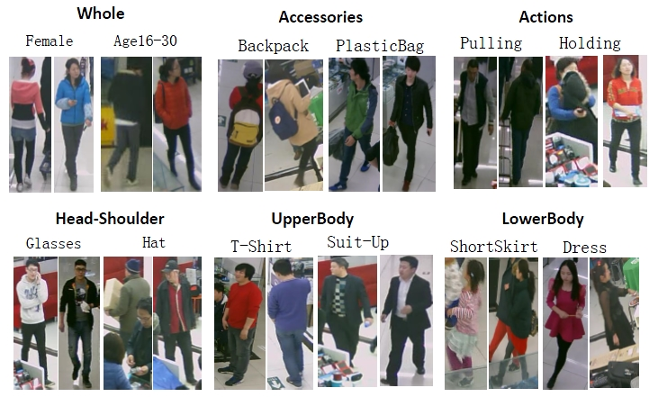
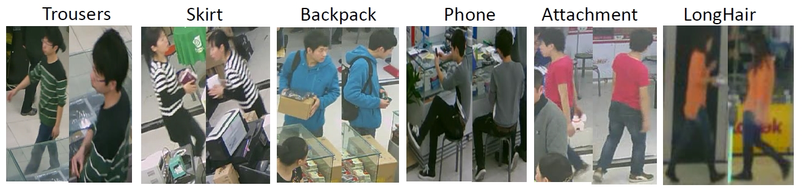
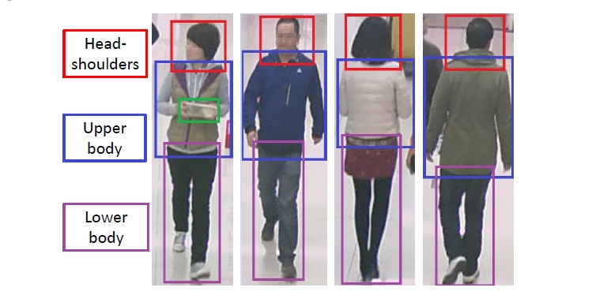
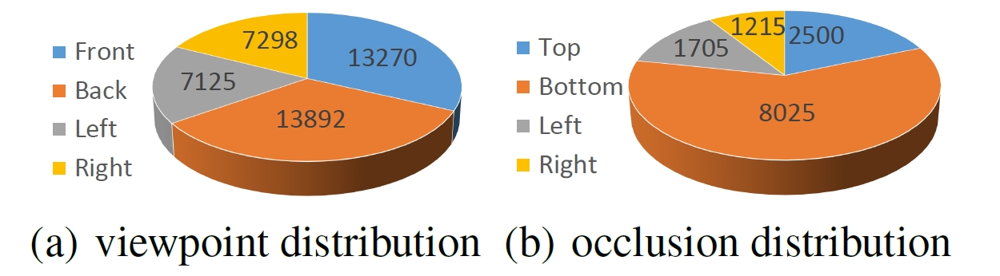

Dangwei Li, Zhang Zhang, Xiaotang Chen, Haibin Ling, Kaiqi Huang
| Class | Attribute | |
|---|---|---|
| Spatial-Temporal | Time, SceneID, image position,Bounding box of body/head-shoulder/upper-body/lower-body/accessories. | |
| Whole | Gender, age, body shape, role. | |
| Accessories | Backpack, single shoulder bag, handbag, plastic bag, paper bag etc. | |
| Posture,Actions | Viewpoints, telephoning, gathering, talking, pushing, carrying etc. | |
| Occlusions | Occluded parts, occlusion types. | |
| Parts | head | Hair style, hair color, hat, glasses. |
| upper | Clothes style, clothes color. | |
| Lower | Clothes style, clothes color, footware style, footware color. | |
Figure 1: Attribute examples in RAP dataset. The attributes are shown according to defination in Table 1.

Figure 2: The same person which are captured at different time.

Figure 3: The part annotation example in RAP dataset.

Figure 4: The distribution of viewpoints and occlusion positions.

| Datasets | #Cams | Scene | Annotation unit | #Samples | Resolution | #Binary attributes | Viewpoint | Occlusion | Part location |
| VIPeR[1] | 2 | outdoor | PID | 1264 | 48*128 | 21 | yes | no | no |
| PRID[2] | 2 | outdoor | PID | 400 | 64*128 | 21 | no | no | no |
| GRID[3] | 8 | outdoor | PID | 500 | from 29*67 to 169*365 | 21 | no | no | no |
| APiS[4] | - | outdoor | PI | 3661 | 48*128 | 11 | no | no | no |
| PETA[5] | - | mixture | PID | 19,000 | from 17*39 to 169*365 | 61 | no | no | no |
| RAP | 26 | indoor | PI | 41,585 | from 36*92 to 344*554 | 69 | yes | yes | yes |